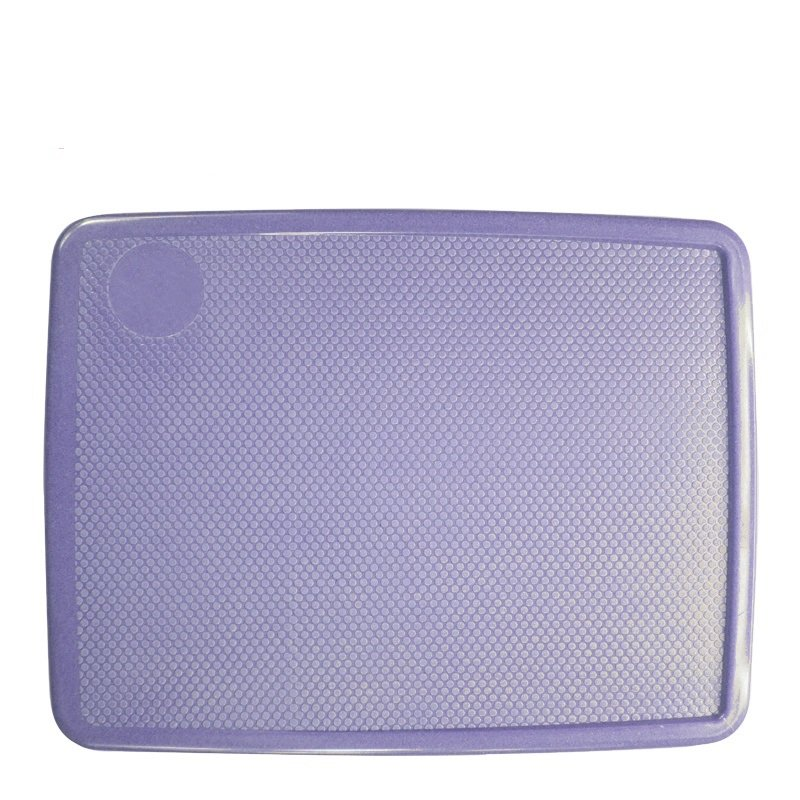
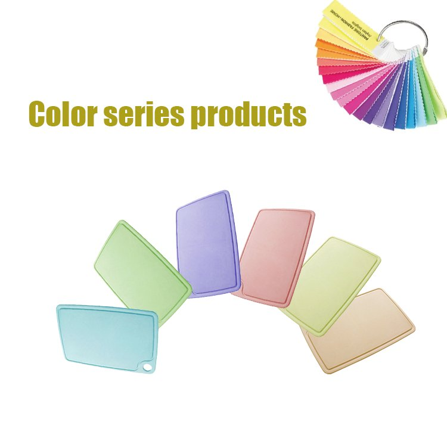
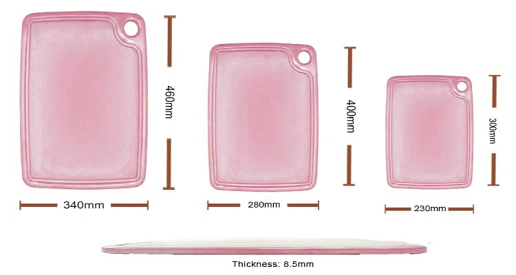
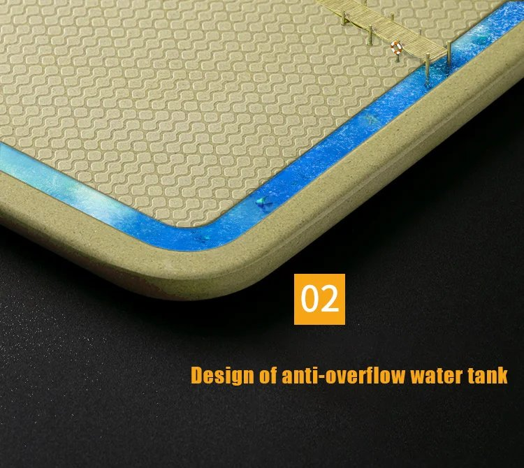
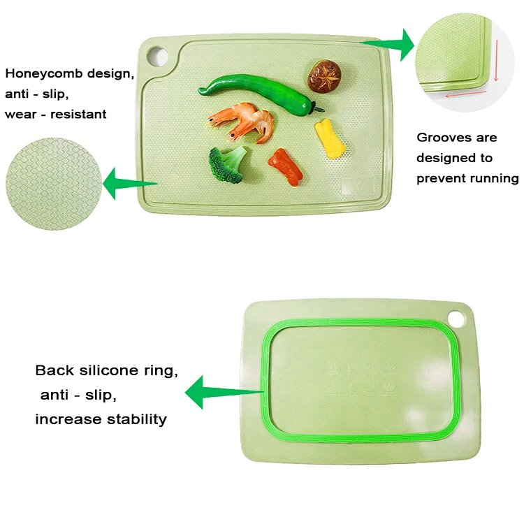
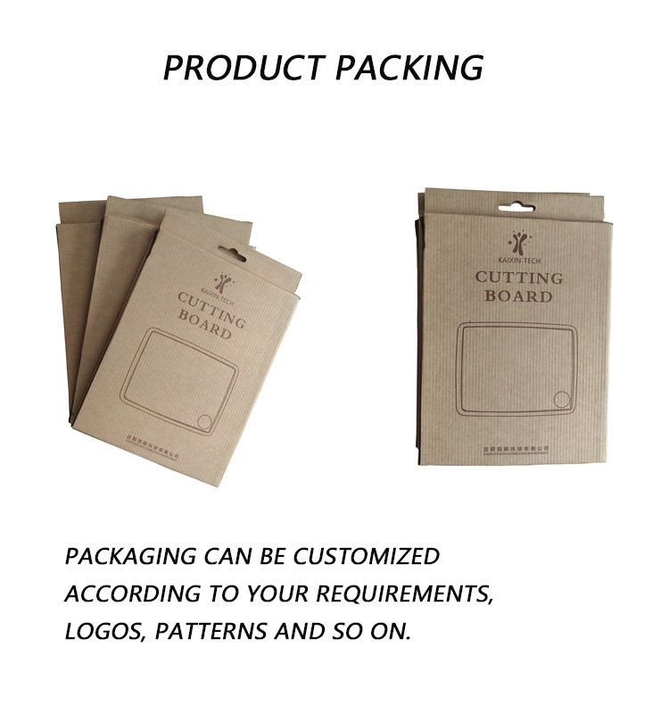
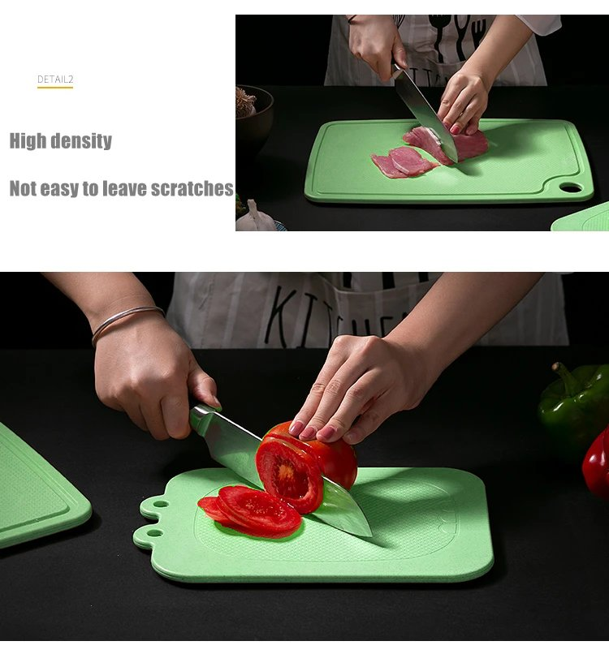
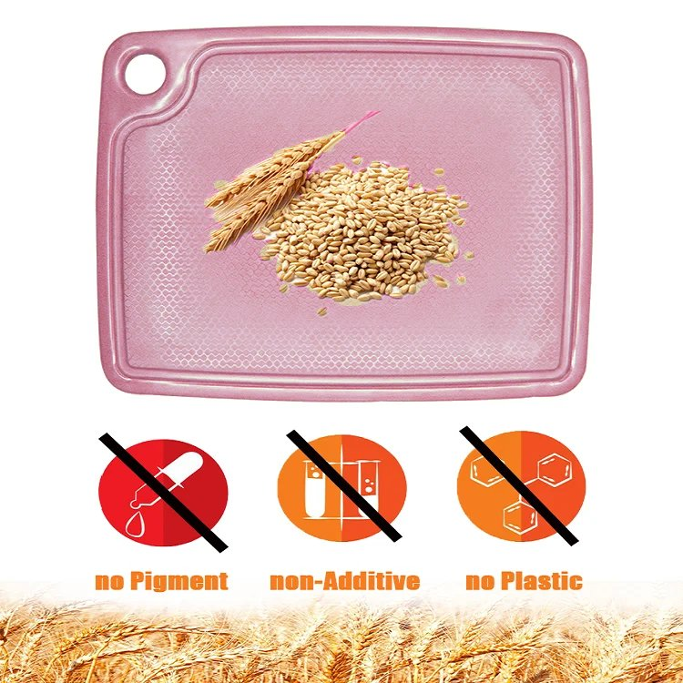

A premium colored cutting board series made from rice husk fiber, available in custom Pantone-matched colors. Features a juice groove, non-slip silicone ring, and a high-density surface that resists knife marks — combining function with brand-personalized aesthetics.
| Material | Natural rice husk fiber + food-grade starch binder |
|---|---|
| Model | KXCB-1400-CR |
| Sizes | Large 460 × 340 × 8.5 mm | Medium 400 × 280 × 8.5 mm | Small 300 × 230 × 8.5 mm |
| Thickness | 8.5 mm |
| Color | Custom Pantone color matching — any color, any combination |
| MOQ | 500 pcs per color per size (minimum 2 colors per order) |
| Packaging | Kraft paper box with custom logo & artwork (OEM) |
| Key Features | Juice groove · Non-slip silicone ring · High-density surface · Hanging hole |
| Certification | SGS-tested food-grade material |
Every feature is designed to make food preparation safer, cleaner, and more beautiful.
The built-in perimeter groove catches juices from meat, fruits, and vegetables — keeping your workspace clean and hygienic. No need for extra towels or cleanup mid-prep.
A precision-fitted silicone ring on the underside grips the countertop firmly, preventing the board from sliding during use. Safe and stable — even when cutting with force.

Molded under high temperature and pressure, the surface is denser and harder than ordinary wood or plastic boards. It resists deep knife marks, stays smoother over time, and is easier to clean.
Made from rice husk — a natural agricultural by-product — blended with food-grade starch binder. No glue, no plastic, no BPA. The visible fiber texture is proof of its plant-based origin.

This chopping board is built for brands. Choose any Pantone color to match your identity, customize the packaging with your logo and artwork, and we'll handle the rest — from mold to finished product.
Natural rice husk color, same plant-fiber material, available in 2 sizes. A simpler option if custom colors aren't needed.
View Classic Chopping BoardTell us your Pantone colors, sizes, and quantity — we'll prepare a tailored quote within 24 hours.
Send Inquiry